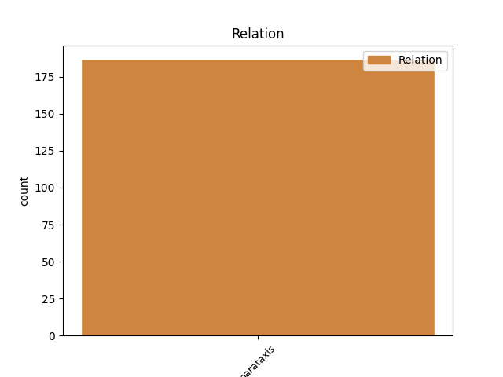
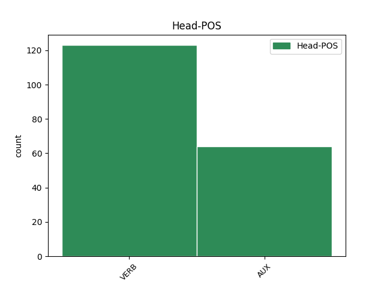
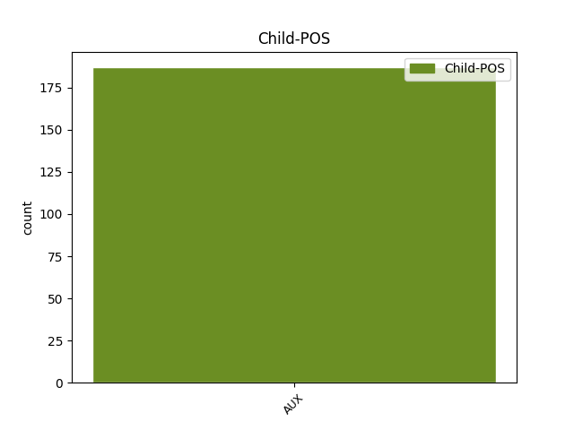

Distribution of features within this leaf



Agreement Rules sorted by frequency.
- When the dependent token is the parataxis(parataxis) of the head token, and the dependent token is AUX.
1 Debora _ _ _ _ 0 _ _ _
2 Serracchiani _ _ _ _ 0 _ _ _
3 : _ _ _ _ 0 _ _ _
4 " _ _ _ _ 0 _ _ _
5 Se _ _ _ _ 0 _ _ _
6 cadiamo _ _ _ _ 0 _ _ _
7 , _ _ _ _ 0 _ _ _
8 le _ _ _ _ 0 _ _ _
9 alternative _ _ _ _ 0 _ _ _
10 sono essere AUX V Mood=Ind|Number=Plur|Person=3|Tense=Pres|VerbForm=Fin 0 _ _ _
11 Grillo _ _ _ _ 0 _ _ _
12 e _ _ _ _ 0 _ _ _
13 Salvini _ _ _ _ 0 _ _ _
14 " _ _ _ _ 0 _ _ _
15 . _ _ _ _ 0 _ _ _
16 Che _ _ _ _ 0 _ _ _
17 poi _ _ _ _ 0 _ _ _
18 è essere AUX V Mood=Ind|Number=Sing|Person=3|Tense=Pres|VerbForm=Fin 10 parataxis _ _
19 il _ _ _ _ 0 _ _ _
20 motivo _ _ _ _ 0 _ _ _
21 per _ _ _ _ 0 _ _ _
22 cui _ _ _ _ 0 _ _ _
23 non _ _ _ _ 0 _ _ _
24 cadete _ _ _ _ 0 _ _ _
25 . _ _ _ _ 0 _ _ _
26 [ _ _ _ _ 0 _ _ _
27 @user _ _ _ _ 0 _ _ _
28 ] _ _ _ _ 0 _ _ _
Disagree Examples:
1 Il _ _ _ _ 0 _ _ _
2 #governo _ _ _ _ 0 _ _ _
3 #Monti _ _ _ _ 0 _ _ _
4 arriverà arrivare VERB V Mood=Ind|Number=Sing|Person=3|Tense=Fut|VerbForm=Fin 0 _ _ _
5 a _ _ _ _ 0 _ _ _
6 fine _ _ _ _ 0 _ _ _
7 legislatura _ _ _ _ 0 _ _ _
8 ? _ _ _ _ 0 _ _ _
9 #Bossi _ _ _ _ 0 _ _ _
10 : _ _ _ _ 0 _ _ _
11 Ma _ _ _ _ 0 _ _ _
12 siete essere AUX V Mood=Ind|Number=Plur|Person=2|Tense=Pres|VerbForm=Fin 4 parataxis _ _
13 matti _ _ _ _ 0 _ _ _
14 ! _ _ _ _ 0 _ _ _
15 da _ _ _ _ 0 _ _ _
16 che _ _ _ _ 0 _ _ _
17 pulpito _ _ _ _ 0 _ _ _
18 , _ _ _ _ 0 _ _ _
19 infatti _ _ _ _ 0 _ _ _
20 siamo _ _ _ _ 0 _ _ _
21 noi _ _ _ _ 0 _ _ _
22 a _ _ _ _ 0 _ _ _
23 credere _ _ _ _ 0 _ _ _
24 che _ _ _ _ 0 _ _ _
25 esiste _ _ _ _ 0 _ _ _
26 la _ _ _ _ 0 _ _ _
27 #PADANIA _ _ _ _ 0 _ _ _
1 Il _ _ _ _ 0 _ _ _
2 #governo _ _ _ _ 0 _ _ _
3 #Monti _ _ _ _ 0 _ _ _
4 arriverà _ _ _ _ 0 _ _ _
5 a _ _ _ _ 0 _ _ _
6 fine _ _ _ _ 0 _ _ _
7 legislatura _ _ _ _ 0 _ _ _
8 ? _ _ _ _ 0 _ _ _
9 #Bossi _ _ _ _ 0 _ _ _
10 : _ _ _ _ 0 _ _ _
11 Ma _ _ _ _ 0 _ _ _
12 siete essere AUX V Mood=Ind|Number=Plur|Person=2|Tense=Pres|VerbForm=Fin 0 _ _ _
13 matti _ _ _ _ 0 _ _ _
14 ! _ _ _ _ 0 _ _ _
15 da _ _ _ _ 0 _ _ _
16 che _ _ _ _ 0 _ _ _
17 pulpito _ _ _ _ 0 _ _ _
18 , _ _ _ _ 0 _ _ _
19 infatti _ _ _ _ 0 _ _ _
20 siamo essere AUX V Mood=Ind|Number=Plur|Person=1|Tense=Pres|VerbForm=Fin 12 parataxis _ _
21 noi _ _ _ _ 0 _ _ _
22 a _ _ _ _ 0 _ _ _
23 credere _ _ _ _ 0 _ _ _
24 che _ _ _ _ 0 _ _ _
25 esiste _ _ _ _ 0 _ _ _
26 la _ _ _ _ 0 _ _ _
27 #PADANIA _ _ _ _ 0 _ _ _
1 Penso _ _ _ _ 0 _ _ _
2 che _ _ _ _ 0 _ _ _
3 babbo _ _ _ _ 0 _ _ _
4 natale _ _ _ _ 0 _ _ _
5 sia essere AUX VA Mood=Sub|Number=Sing|Person=3|Tense=Pres|VerbForm=Fin 0 _ _ _
6 un _ _ _ _ 0 _ _ _
7 po _ _ _ _ 0 _ _ _
8 invecchiato _ _ _ _ 0 _ _ _
9 .. _ _ _ _ 0 _ _ _
10 non _ _ _ _ 0 _ _ _
11 sente _ _ _ _ 0 _ _ _
12 più _ _ _ _ 0 _ _ _
13 tanto _ _ _ _ 0 _ _ _
14 bene _ _ _ _ 0 _ _ _
15 , _ _ _ _ 0 _ _ _
16 gli _ _ _ _ 0 _ _ _
17 avevo avere AUX VA Mood=Ind|Number=Sing|Person=1|Tense=Imp|VerbForm=Fin 5 parataxis _ _
18 chiesto _ _ _ _ 0 _ _ _
19 mari _ _ _ _ 0 _ _ _
20 e _ _ _ _ 0 _ _ _
21 monti _ _ _ _ 0 _ _ _
22 ed _ _ _ _ 0 _ _ _
23 invece _ _ _ _ 0 _ _ _
24 mi _ _ _ _ 0 _ _ _
25 ha _ _ _ _ 0 _ _ _
26 portato _ _ _ _ 0 _ _ _
27 Mario _ _ _ _ 0 _ _ _
28 Monti _ _ _ _ 0 _ _ _
29 ! _ _ _ _ 0 _ _ _
1 Non _ _ _ _ 0 _ _ _
2 riesco riuscire VERB V Mood=Ind|Number=Sing|Person=1|Tense=Pres|VerbForm=Fin 0 _ _ _
3 a _ _ _ _ 0 _ _ _
4 trovare _ _ _ _ 0 _ _ _
5 nani _ _ _ _ 0 _ _ _
6 e _ _ _ _ 0 _ _ _
7 ballerine _ _ _ _ 0 _ _ _
8 in _ _ _ _ 0 _ _ _
9 il _ _ _ _ 0 _ _ _
10 governo _ _ _ _ 0 _ _ _
11 Monti _ _ _ _ 0 _ _ _
12 . _ _ _ _ 0 _ _ _
13 Ci _ _ _ _ 0 _ _ _
14 deve dovere AUX VM Mood=Ind|Number=Sing|Person=3|Tense=Pres|VerbForm=Fin 2 parataxis _ _
15 essere _ _ _ _ 0 _ _ _
16 un _ _ _ _ 0 _ _ _
17 errore _ _ _ _ 0 _ _ _
18 ! _ _ _ _ 0 _ _ _
19 :) _ _ _ _ 0 _ _ _
1 Renzi _ _ _ _ 0 _ _ _
2 : _ _ _ _ 0 _ _ _
3 " _ _ _ _ 0 _ _ _
4 Scusate Scusare VERB V Mood=Imp|Number=Plur|Person=2|Tense=Pres|VerbForm=Fin 0 _ _ _
5 il _ _ _ _ 0 _ _ _
6 ritardo _ _ _ _ 0 _ _ _
7 , _ _ _ _ 0 _ _ _
8 ho avere AUX VA Mood=Ind|Number=Sing|Person=1|Tense=Pres|VerbForm=Fin 4 parataxis _ _
9 passato _ _ _ _ 0 _ _ _
10 la _ _ _ _ 0 _ _ _
11 notte _ _ _ _ 0 _ _ _
12 a _ _ _ _ 0 _ _ _
13 salvare _ _ _ _ 0 _ _ _
14 l' _ _ _ _ 0 _ _ _
15 euro _ _ _ _ 0 _ _ _
16 " _ _ _ _ 0 _ _ _
17 . _ _ _ _ 0 _ _ _
18 Ma _ _ _ _ 0 _ _ _
19 io _ _ _ _ 0 _ _ _
20 dopo _ _ _ _ 0 _ _ _
21 un _ _ _ _ 0 _ _ _
22 po' _ _ _ _ 0 _ _ _
23 l' _ _ _ _ 0 _ _ _
24 avrei _ _ _ _ 0 _ _ _
25 lasciato _ _ _ _ 0 _ _ _
26 perdere _ _ _ _ 0 _ _ _
27 , _ _ _ _ 0 _ _ _
28 il _ _ _ _ 0 _ _ _
29 carrello _ _ _ _ 0 _ _ _
30 . _ _ _ _ 0 _ _ _
31 [ _ _ _ _ 0 _ _ _
32 @user _ _ _ _ 0 _ _ _
33 ] _ _ _ _ 0 _ _ _